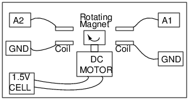

Use the DC motor to rotate the magnet. The coils are provided with ExpEYES.
Make the connections as shown:
The frequency of the induced AC will be the number of rotations per second of the magnet.
When you use two coils, the phase difference between the two signals is decided by the angle between the axes of the coils.
Adjust the time base to view 4 or 5 cycles